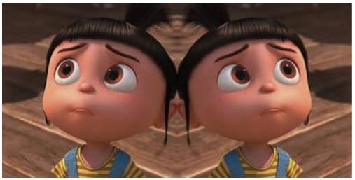
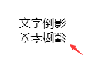
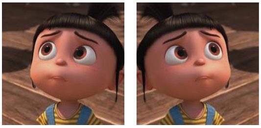

使用CSS3制作文字、图片倒影
- CSS3
- 2018-07-15
- 197
- 5
CSS3制作文字、图片倒影需要涉及到使用CSS3.0新属性之box-reflect。box-reflect属性目前仅在Chrome、Safari和Opera浏览器下支持，但这并不影响我们来学习这个属性的应用。
box-reflect语法：
box-reflect：none | <direction> <offset>? <mask-box-image>?
<direction> = above | below | left | right
<offset> = <length> | <percentage>
<mask-box-image> = none | <url> | <linear-gradient> | <radial-gradient> | <repeating-linear-gradient> | <repeating-radial-gradient>
默认值：none
适用于：所有元素
继承性：无
由于此属性并不是W3C标准属性，在具体使用之时，还是需要添加浏览器的私有属性，根据浏览器的兼容性，使用box-reflect时需要添加-webkit和前缀：
-webkit-box-reflect：none | <direction> <offset>? <mask-box-image>?
box-reflect：none | <direction> <offset>? <mask-box-image>?
取值：
none：无倒影
<direction> Demo: 简单图片倒影 See with Webkit
above：指定倒影在对象的上边
below：指定倒影在对象的下边
left：指定倒影在对象的左边
right：指定倒影在对象的右边
<offset> Demo: 图片与倒影间隔 See with Webkit
<length>：用长度值来定义倒影与对象之间的间隔。可以为负值
<percentage>：用百分比来定义倒影与对象之间的间隔。可以为负值
<mask-box-image> Demo: 更真实的图片倒影 文字倒影与渐变 See with Webkit
none：无遮罩图像
<url>：使用绝对或相对地址指定遮罩图像。
<linear-gradient>：使用线性渐变创建遮罩图像。
<radial-gradient>：使用径向(放射性)渐变创建遮罩图像。
<repeating-linear-gradient>：使用重复的线性渐变创建背遮罩像。
<repeating-radial-gradient>：使用重复的径向(放射性)渐变创建遮罩图像。
图片倒影：
假设我们需要给一张图片做倒影效果，其结构其实非常简单：

根据前面的语法介绍，要让倒影在对象的右侧，我们只需要给box-reflect属性取值为right即可：
.box-reflect img {
- -webkit-box-reflect: right;
box-reflect:right;
}
效果如图：
<img src="图片.jpg" alt="使用CSS3制作图片倒影" style="-webkit-box-reflect: right;box-reflect:right">
文字倒影：
要让倒影在对象的下方，我们只需要给box-reflect属性取值为below即可：
-webkit-box-reflect: below;
box-reflect: below;
记录·回忆
特别提示：在此示例中，我们没有为倒影提供了一个空白区，所以下面这一行就占据了位置，要解决这个问题，就得提供一个空白区域出来，使用margin：margin:20px 0;
记录·回忆
倒影与对象之间的间距：
了解完生成倒影的方向之后，我们一起来看第二个属性值<offset>。有时候大家可能会有这样的需求，我虽然将倒影生成出来了，但我想让生成的倒影与对象(原图)之间有一定的间距。那么这个时候我们就需要使用到box-reflect属性中的第二个属性值<offset>。
随便拿一个示例来说做演示，假设对象生成的倒影在底部，而且需要让生成的倒影离自身有一个20px的间距，此时我们只需要这样做：
.box-reflect img {
- -webkit-box-reflect: right 20px;
box-reflect:right 20px;
}
效果如图：
<img src="图片.png" alt="使用CSS3制作图片倒影" style="-webkit-box-reflect: right 20px;box-reflect:right 20px">


下一篇：返回列表
推荐文章

-
 [2018-07-15]
[2018-07-15]
-
 [2018-07-15]
[2018-07-15]
-
 [2018-07-15]
[2018-07-15]
-
 [2018-07-15]
[2018-07-15]
点击排行

-
 [2018-07-15]
[2018-07-15]
-
 [2018-07-15]
[2018-07-15]
-
[2018-07-15]
-
 [2018-07-15]
[2018-07-15]